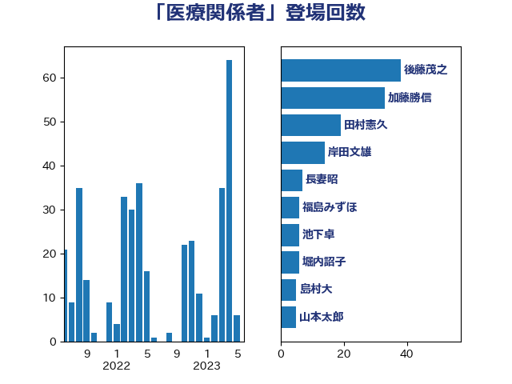

単語「医療関係者」

| 田村憲久 | 自由民主党 | 125 回 |
| 長妻昭 | 立憲民主党 | 34 回 |
| 菅義偉 | 自由民主党 | 33 回 |
| 後藤茂之 | 自由民主党 | 31 回 |
| 西村康稔 | 自由民主党 | 18 回 |
| 足立康史 | 日本維新の会 | 16 回 |
| 岸田文雄 | 自由民主党 | 11 回 |
| 塩川鉄也 | 日本共産党 | 10 回 |
| 大塚耕平 | 国民民主党 | 8 回 |
| 自見はなこ | 自由民主党 | 7 回 |
| 中島克仁 | 立憲民主党 | 6 回 |
| 宮本徹 | 日本共産党 | 6 回 |
| 柴田巧 | 日本維新の会 | 6 回 |
| 田村智子 | 日本共産党 | 6 回 |
| こやり隆史 | 自由民主党 | 5 回 |
| 中山展宏 | 自由民主党 | 5 回 |
| 堀内詔子 | 自由民主党 | 5 回 |
| 梅村聡 | 日本維新の会 | 5 回 |
| 福島みずほ | 社会民主党 | 5 回 |
| 佐藤英道 | 公明党 | 4 回 |
| 和田政宗 | 自由民主党 | 4 回 |
| 大島敦 | 立憲民主党 | 4 回 |
| 玉木雄一郎 | 国民民主党 | 4 回 |
| 田島麻衣子 | 立憲民主党 | 4 回 |
| 田村まみ | 国民民主党 | 4 回 |
| 秋野公造 | 公明党 | 4 回 |
| 芳賀道也 | 国民民主党 | 4 回 |
| 金子恭之 | 自由民主党 | 4 回 |
| 高木かおり | 日本維新の会 | 4 回 |
| 吉田忠智 | 立憲民主党 | 3 回 |
| 大西健介 | 立憲民主党 | 3 回 |
| 小西洋之 | 立憲民主党 | 3 回 |
| 山本香苗 | 公明党 | 3 回 |
| 岸信夫 | 自由民主党 | 3 回 |
| 島村大 | 自由民主党 | 3 回 |
| 末松義規 | 立憲民主党 | 3 回 |
| 村井英樹 | 自由民主党 | 3 回 |
| 柚木道義 | 立憲民主党 | 3 回 |
| 武田良太 | 自由民主党 | 3 回 |
| 茂木敏充 | 自由民主党 | 3 回 |
| 赤羽一嘉 | 公明党 | 3 回 |
| 上川陽子 | 自由民主党 | 2 回 |
| 下村博文 | 自由民主党 | 2 回 |
| 丸川珠代 | 自由民主党 | 2 回 |
| 仁木博文 | 無所属 | 2 回 |
| 今枝宗一郎 | 自由民主党 | 2 回 |
| 国光あやの | 自由民主党 | 2 回 |
| 山井和則 | 立憲民主党 | 2 回 |
| 山添拓 | 日本共産党 | 2 回 |
| 山際大志郎 | 自由民主党 | 2 回 |
| 川田龍平 | 立憲民主党 | 2 回 |
| 枝野幸男 | 立憲民主党 | 2 回 |
| 河野太郎 | 自由民主党 | 2 回 |
| 浅田均 | 日本維新の会 | 2 回 |
| 浜口誠 | 国民民主党 | 2 回 |
| 片山さつき | 自由民主党 | 2 回 |
| 田畑裕明 | 自由民主党 | 2 回 |
| 白石洋一 | 立憲民主党 | 2 回 |
| 盛山正仁 | 自由民主党 | 2 回 |
| 福山哲郎 | 立憲民主党 | 2 回 |
| 西岡秀子 | 国民民主党 | 2 回 |
| 谷合正明 | 公明党 | 2 回 |
| 野田聖子 | 自由民主党 | 2 回 |
| 馬場伸幸 | 日本維新の会 | 2 回 |
| おおつき紅葉 | 立憲民主党 | 1 回 |
| 三原じゅん子 | 自由民主党 | 1 回 |
| 世耕弘成 | 自由民主党 | 1 回 |
| 中西祐介 | 自由民主党 | 1 回 |
| 中谷一馬 | 立憲民主党 | 1 回 |
| 串田誠一 | 日本維新の会 | 1 回 |
| 二階俊博 | 自由民主党 | 1 回 |
| 井上哲士 | 日本共産党 | 1 回 |
| 伊藤孝恵 | 国民民主党 | 1 回 |
| 伊藤孝江 | 公明党 | 1 回 |
| 佐藤正久 | 自由民主党 | 1 回 |
| 冨樫博之 | 自由民主党 | 1 回 |
| 加田裕之 | 自由民主党 | 1 回 |
| 加藤勝信 | 自由民主党 | 1 回 |
| 古屋範子 | 公明党 | 1 回 |
| 古川元久 | 国民民主党 | 1 回 |
| 城井崇 | 立憲民主党 | 1 回 |
| 宮口治子 | 立憲民主党 | 1 回 |
| 小川淳也 | 立憲民主党 | 1 回 |
| 小沼巧 | 立憲民主党 | 1 回 |
| 尾崎正直 | 自由民主党 | 1 回 |
| 山下芳生 | 日本共産党 | 1 回 |
| 山岡達丸 | 立憲民主党 | 1 回 |
| 山本博司 | 公明党 | 1 回 |
| 山田勝彦 | 立憲民主党 | 1 回 |
| 岡本あき子 | 立憲民主党 | 1 回 |
| 岩本剛人 | 自由民主党 | 1 回 |
| 後藤祐一 | 立憲民主党 | 1 回 |
| 打越さく良 | 立憲民主党 | 1 回 |
| 早坂敦 | 日本維新の会 | 1 回 |
| 末松信介 | 自由民主党 | 1 回 |
| 本田顕子 | 自由民主党 | 1 回 |
| 東徹 | 日本維新の会 | 1 回 |
| 松本尚 | 自由民主党 | 1 回 |
| 林芳正 | 自由民主党 | 1 回 |
| 柳ヶ瀬裕文 | 日本維新の会 | 1 回 |
| 櫻井周 | 立憲民主党 | 1 回 |
| 比嘉奈津美 | 自由民主党 | 1 回 |
| 浜野喜史 | 国民民主党 | 1 回 |
| 渡辺孝一 | 自由民主党 | 1 回 |
| 牧原秀樹 | 自由民主党 | 1 回 |
| 田嶋要 | 立憲民主党 | 1 回 |
| 石井正弘 | 自由民主党 | 1 回 |
| 石原正敬 | 自由民主党 | 1 回 |
| 石橋通宏 | 立憲民主党 | 1 回 |
| 福岡資麿 | 自由民主党 | 1 回 |
| 福田達夫 | 自由民主党 | 1 回 |
| 稲富修二 | 立憲民主党 | 1 回 |
| 稲津久 | 公明党 | 1 回 |
| 竹内真二 | 公明党 | 1 回 |
| 笠浩史 | 無所属 | 1 回 |
| 細田健一 | 自由民主党 | 1 回 |
| 緑川貴士 | 立憲民主党 | 1 回 |
| 美延映夫 | 日本維新の会 | 1 回 |
| 義家弘介 | 自由民主党 | 1 回 |
| 羽生田俊 | 自由民主党 | 1 回 |
| 舞立昇治 | 自由民主党 | 1 回 |
| 舩後靖彦 | れいわ新選組 | 1 回 |
| 蓮舫 | 立憲民主党 | 1 回 |
| 藤丸敏 | 自由民主党 | 1 回 |
| 藤井比早之 | 自由民主党 | 1 回 |
| 藤木眞也 | 自由民主党 | 1 回 |
| 角田秀穂 | 公明党 | 1 回 |
| 野田国義 | 立憲民主党 | 1 回 |
| 青山周平 | 自由民主党 | 1 回 |
| 青山繁晴 | 自由民主党 | 1 回 |
| 青柳陽一郎 | 立憲民主党 | 1 回 |
| 高木啓 | 自由民主党 | 1 回 |
| 高木宏壽 | 自由民主党 | 1 回 |
| 高橋千鶴子 | 日本共産党 | 1 回 |